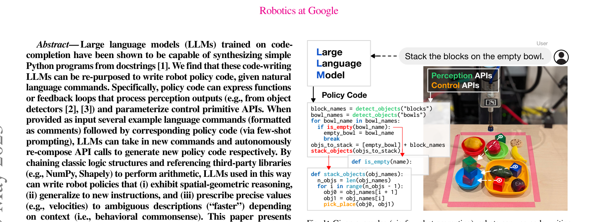

자연어 명령을 받은 코드-학습 LLM(Codex/GPT-3)이 지각 API·제어 primitive·수학 라이브러리를 조합하는 파이썬 정책 코드를 few-shot으로 직접 작성. 별도의 정책 학습 없이 공간·기하 추론, 새 지시로의 일반화, 상식 기반 값 생성이 가능함을 보인다. 핵심 기법은 계층적 코드 생성(hierarchical code-gen) — 미정의 함수를 만나면 그 함수 본문을 재귀적으로 생성. HumanEval에서 새 SOTA(39.8%) 달성. 실 로봇(테이블탑 조작, 화이트보드 그리기, 모바일 조작)에서 검증되어 "LLM = 로봇 정책 프로그래머"라는 방향을 확립한 대표 논문.
LLM으로 로봇 계획을 뽑는 기존 연구(SayCan 등)는 대개 고정된 스킬 라이브러리 위의 자연어 계획에 그쳐, 파라미터(좌표·조건·루프) 표현이 어렵다. 저자들은 코드로 학습된 LLM이 이미 제어 흐름·수치 연산·객체 지향 조작을 표현하는 데 능숙함에 착안, "정책을 자연어로 계획"하는 대신 "정책을 코드로 작성"하도록 프롬프팅한다. 이는 조건 분기, 반복, 파라미터화된 제어 등 자연어로는 불편했던 표현을 자연스럽게 가능하게 만든다.
사용자 명령을 프롬프트 접두어(예: 사용 가능한 API·객체 목록·few-shot 예제)와 함께 LLM에 던지면 LLM이 파이썬 코드를 이어 생성. 그 코드는 객체 감지 API(예: detect_object("red block")), 기하 라이브러리(NumPy/Shapely), 제어 primitive(put_first_on_second, go_to_pose)를 호출한다. 코드는 그대로 파이썬으로 실행되며, 결과는 로봇 팔의 임피던스 제어 또는 웨이포인트 트래킹으로 전달.
생성된 코드가 아직 존재하지 않는 헬퍼 함수를 호출하면(예: get_obj_names_size("red")), 그 함수 시그니처와 문맥을 다시 LLM에 넣어 함수 본문을 생성. 이 과정을 재귀적으로 반복해 복잡한 프로그램을 위로부터 아래로 확장할 수 있다.
put_first_on_second 등의 상위 primitive를 순차/조건적으로 호출.일반 코드 생성 벤치 HumanEval에서 계층적 프롬프팅이 pass@1 39.8%로 당시 SOTA 갱신. LMPs의 재귀 생성 아이디어가 로봇용 특화가 아니라 일반 코드 생성에서도 유효함을 시사.
블록·bowl 색상·공간 관계 지시(예: "빨간 블록을 파란 bowl 왼쪽에 놓아라", "블록들을 색상별로 사분원에 정렬")에서 few-shot 프롬프트만으로 다단계 조작. 신규 조건 지시("스택이 세 개면 세 번째를 옆에")에서도 정책 재학습 없이 코드 조건 분기로 대응.
"별을 그려라", "정사각형 네 개로 격자를 그려라" 같은 기하적 지시를 numpy/shapely로 좌표를 계산해 웨이포인트 시퀀스로 변환.
주방 환경에서 "냉장고 근처의 사과를 카운터로 옮겨라" 같은 지시를 내비게이션+조작 코드로 합성. 위치 정보는 SLAM 맵과 객체 감지 결과에서 조회.

# API hints
# detect_object(name) -> pose
# put_first_on_second(pose1, pose2)
# ...
# Task: "Put the red block on the blue bowl."
red = detect_object("red block")
blue = detect_object("blue bowl")
put_first_on_second(red, blue)
LLM은 hint + few-shot 예제를 보고 위와 같은 실행 가능 코드를 이어서 생성한다.
아직 추가 질문이 없습니다. 이 논문에 대해 더 궁금한 점을 물어보시면 답변을 여기에 정리해 추가합니다.